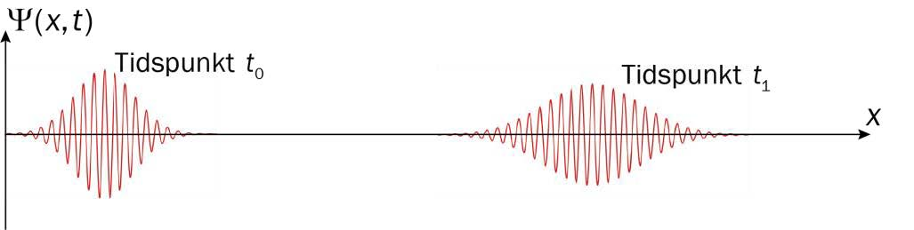

En kvantepartikkel beveger seg mot høyre i \(x\)-retning. Egenskapene til kvantepartikkelen beskrives av en bølgefunksjon \(\Psi\) som er avhengig av posisjon og tid. Figuren viser bølgefunksjonen ved to ulike tidspunkter, \(t_0\) og \(t_1\) .
Ved tidspunktet \(t_0\) er uskarpheten i posisjonen \(\Delta x_0\), og den minste mulige uskarpheten i bevegelsesmengden er \(\Delta p_0\).
Hva er riktig om uskarphetene \(\Delta x_1\) og \(\Delta p_1\) ved tidspunktet \(t_1\)?
